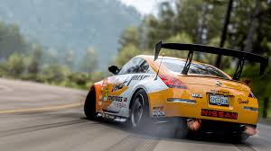

Chevette

Além de ser um carro leve, é possível encontrar peças para esse carro com facilidade. Com um kit "padaria" de preparação já dá para brincar
Ômega 4.1

Também tração traseira, este carro possui um bom torque de fábrica, isso significa que com poucas alterações você tem um bom carro para drift
Opala v6

Este já é um carro mais difícil de ser controlado, por conta do peso e grande pôtencia. Também não exige um grande número de preparações
Maverick

O Maverick possui muito torque graças ao motor v8 porém, como no caso anterior, seu peso dificulta o controle do veículo
Nissan 350z
O carro mais caro da lista, mas possui controle e potência. As peças são mais difíceis de serem encontradas, no entanto, se bem preparado este
carro corre até nas categorias profissionais